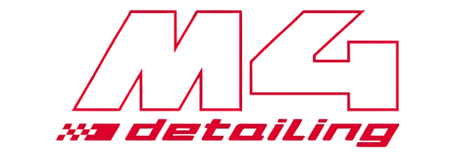
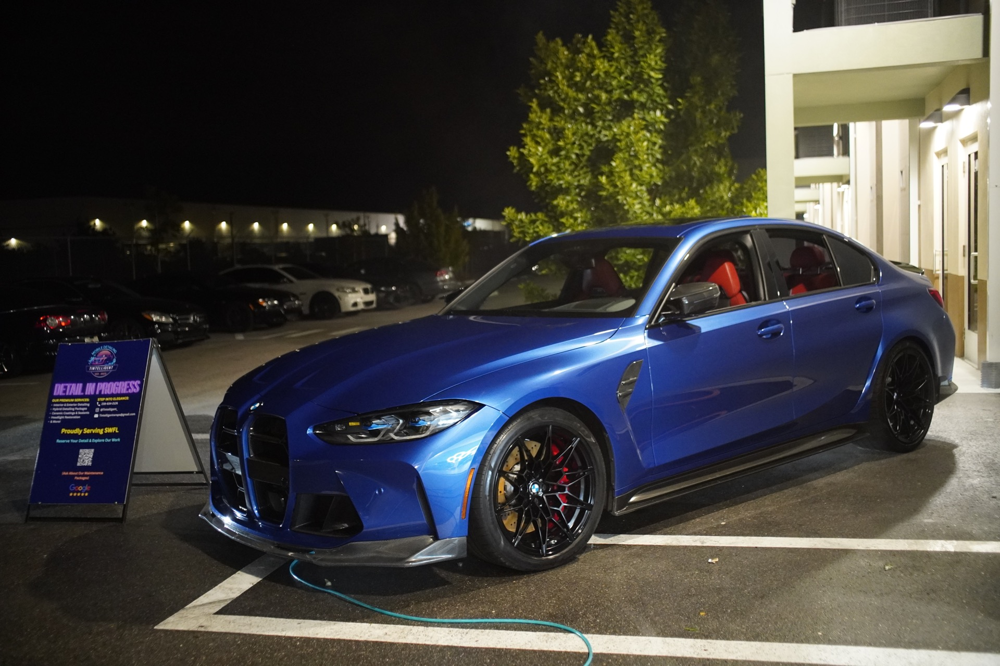

Limited-Time Special
Full Detail from $199 in Punta Gorda
Save $50–$70 this week. Mobile — we come to you.
Takes under a minute · No obligation

Save $50–$70 this week. Mobile — we come to you.
Takes under a minute · No obligation
In every full detail
Professional car detailing, paint correction, ceramic coating, and interior cleaning in Punta Gorda, Port Charlotte & North Port

Multi-stage hand wash removes all dirt, grime, and bonded contaminants. Clay bar treatment ensures your paint is clean down to the surface — ready for protection or just looking its best.

Machine polishing removes swirl marks, scratches, and oxidation to restore your paint's original gloss. Brings back depth and clarity that washing alone can't achieve.

Nano-ceramic coating shields your paint from water, dirt, and UV damage. Hydrophobic protection makes maintenance effortless and keeps your car looking freshly detailed for months.

Restore cloudy, yellowed headlights to crystal clarity through sanding, polishing, and UV sealing. Safer night driving and a better-looking vehicle in one service.

Complete interior refresh with vacuum, steam cleaning, and every surface detailed. Dashboard, console, vents, windows, and door panels — all spotless.

Professional leather cleaning and conditioning restores moisture, prevents cracking, and enhances color. Keeps your seats supple and rich-looking year after year.

Hot water extraction lifts deep stains, odors, and allergens from carpets and seats. Pet stains, food spills, and ground-in dirt removed at the source.

Eliminate smoke, pet, mildew, and food odors with professional sanitizers. Kills bacteria at the source and leaves your cabin smelling fresh.
Not sure what your car needs? Request a booking — we'll recommend the right service.
Everything you need to know before booking.

Book your car detailing appointment today and experience the M4 Detailing difference
Service Area
Punta Gorda, Port Charlotte & North Port
Availability
7 days a week